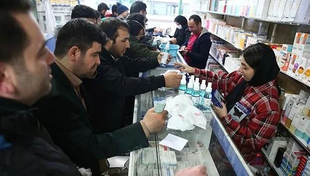

韩国发布最高级别预警，意大利上百人确诊11市封城
原文链接 备份链接 日本街头 图片来源：共同社 “ 全球新冠肺炎疫情播报，持续更新。 ” （本文持续更新中，点击左下角阅读原文，实时跟踪国际疫情动态。文中段首所示时间为本文更新时间。） 意大利 0800【意大利累计确诊157例新冠肺炎，累 …
图片来源：PressTV
记者：肖恩
“
伊朗卫生部发言人在接受《金融时报》采访时坦言，国内感染人数可能高于目前通报的数量，但伊朗把人民的健康放在首位，这时不会考虑政治或经济因素。
”
伊朗已然成为中东地区的新冠肺炎疫情中心。
从2月19日通报出现确诊病例至23日，短短五天，伊朗新冠肺炎确诊人数激增至43例，其中八例死亡，是除中国外死亡人数最多的国家，死亡率高达18.6%。在什叶派圣城库姆，共有26例确诊病例，包括五例死亡病例。
伊朗七个陆上邻国中，有五个已经宣布关闭与伊朗边境，包括巴基斯坦、伊拉克、土耳其、阿富汗和亚美尼亚。此外，土耳其还宣布暂时停止往返伊朗的航班。
阿富汗国家安全网站称，为防止新冠肺炎疫情扩散，该国已停止与伊朗所有陆上和空中往来，同时关闭两国边境。巴基斯坦则在巴伊边境设立了有100张床位的帐篷医院，以应对可能发生的紧急情况。
科威特也取消了所有往返伊朗的航班和船只。约旦则在23日开始禁止来自伊朗的非约旦人入境。
伊朗总统鲁哈尼23日出席内阁会议时表示，德黑兰将动用军事力量控制疫情，尽可能地减小损失。另据伊朗Press TV报道，鲁哈尼当天还签发命令，要求伊朗卫生部长纳马基（Saeed Namaki）牵头成立一个国家疫情防控指挥部。
纳马基表示，伊朗每个城市都会设立至少一家新冠肺炎定点医院，在德黑兰等大城市可能会增加，所有治疗费用全免。全国将投入至少230家医院用以接受新冠肺炎患者。
德黑兰市长哈纳奇（Pirouz Hanachi）表示，全市所有公共场所、公交车和地铁会在每天晚上消毒。
伊朗已经出台一系列“防疫措施”，包括关闭14个省份的学校和教育机构、展览馆和电影院等场所也关闭一周，以及暂停足球赛事等。
但伊朗最高领袖哈梅内伊却称，伊朗国内的肺炎疫情被敌对势力利用，以妨害该国选举。伊朗四年一度的议会选举在23日落下帷幕，投票率仅有42.57%，是1979年伊斯兰革命以来最低。哈梅内伊23日表示，低投票率与一些关于新冠肺炎疫情的虚假宣传有关。敌对势力抓住这次机会，利用媒体造势，阻止人们前去投票。
实际上，在21日选举开始前，就有大批伊朗年轻人表示不会去投票，以表达对宪法监护委员会剥夺改革派候选人参选机会的不满。此前就有预测指出，此次伊朗议会选举投票率或仅有50%左右。
伊朗民众对政府的信任度已经达到低谷，尤其是在此前伊朗政府屡次否认击落乌克兰客机的事实以后。不少伊朗民众对政府公布的确诊数字表示怀疑。还有民众指出，虽然政府一直表示口罩和洗手液供应充足，但事实并非如此。
据英国《金融时报》报道，在伊朗通报首例新冠肺炎死亡病例后，伊朗国内就出现了抢购食物的现象。消毒产品、口罩和一些食品价格在过去几天涨了五倍，一些药店的口罩已经售罄。
伊朗卫生部发言人贾汉普尔在接受《金融时报》采访时坦言，伊朗国内感染的人数可能高于目前通报的数量，只有那些前去就医或者出现严重症状的患者才会被纳入统计。贾汉普尔同时强调，他们把人民的健康放在首位，这时候不会考虑政治或经济因素。
伊朗政府发言人拉贝（Ali Rabiei）19日表示，卫生部在处理疫情爆发问题时做到了诚实、透明。
无论政府态度如何，美国制裁下的伊朗应对疫情的能力的确堪忧。英国东英吉利大学医学教授亨特（Paul Hunter）表示，如果感染人数庞大，伊朗基本不可能有足够的设备和资源筛查和诊治患者。在过去发生的多次武装冲突中，医疗设施通常会成为打击目标，受损严重。
一名来自吉兰省拉什特（Rasht）的护士表示，她们身处诊治疑似病人的前线，却没有符合标准的防护服或口罩，只能使用没有真正防护力的手术衣，消毒产品也急缺。
一名伊朗商人对伊朗劳动通讯社（ILNA）表示，有多家国际企业有意向伊朗提供新冠病毒试剂盒，但由于美国制裁限制，伊朗无法向这些企业付款。就在21日，国际反洗钱金融行动特别工作组（FATF）决定将伊朗重新列入黑名单，与伊朗进行的所有交易都面临更严格的审查。
WHO地中海东部区域办公室成员阿布巴卡尔（Abdinasir Abubakar）也说，伊朗拥有区域内最好的医疗卫生系统之一，有能力应对疫情。但美国制裁的确对伊朗经济造成巨大打击，可能导致伊朗无法进口生产相应设备和药物的技术。
但贾汉普尔仍然表示，伊朗拥有检测病毒的能力，并且从一个多月前就开始进口相关设备。美国制裁没有也不会对伊朗进口医疗设备产生影响。
目前世界卫生组织（WHO）援助的第四批新冠病毒试剂盒已经运抵伊朗，还有更多正在路上。
未经授权 禁止转载

原文链接 备份链接 日本街头 图片来源：共同社 “ 全球新冠肺炎疫情播报，持续更新。 ” （本文持续更新中，点击左下角阅读原文，实时跟踪国际疫情动态。文中段首所示时间为本文更新时间。） 意大利 0800【意大利累计确诊157例新冠肺炎，累 …
原文链接 备份链接 据韩国中央防疫对策本部24日通报，截至当天上午9时，韩国较前一天下午4时新增161例新冠肺炎确诊病例，累计确诊病例达763例，出现7例死亡病例。另据韩媒报道，一名16个月的女婴被确诊感染，这是目前韩国年龄最小的新冠肺炎 …
原文链接 备份链接 伊朗库姆。图片来源：pixabay 文：央视新闻 雷湘平 据伊朗英语新闻电视台报道，伊朗卫生部发言人贾汉普尔当地时间22日表示，伊朗被确诊的新冠病毒肺炎患者数量达到了28人，其中5人已经死亡。贾汉普尔表示，在21—22 …
原文链接 备份链接 据路透社报道，2月22日，伊朗卫生部发言人贾汉普尔表示，伊朗新检测出10例新冠肺炎病例，其中1例已经死亡，伊朗确诊病例总数达到28例。 “伊朗所有城市可能都出现冠状病毒” 贾汉普尔表示，新增的10个被确诊病例中，8个 …
原文链接 备份链接 很多时候，流调人员不像医生，患者会主动尽可能多地给医生提供有用信息。流调人员说，希望市民在经历过疫情之后，能够了解到流调的重要性，为他们将来的工作提供更多便利。 记者 | 应 琛 当大家对新冠肺炎“零号病人”议论纷纷之 …